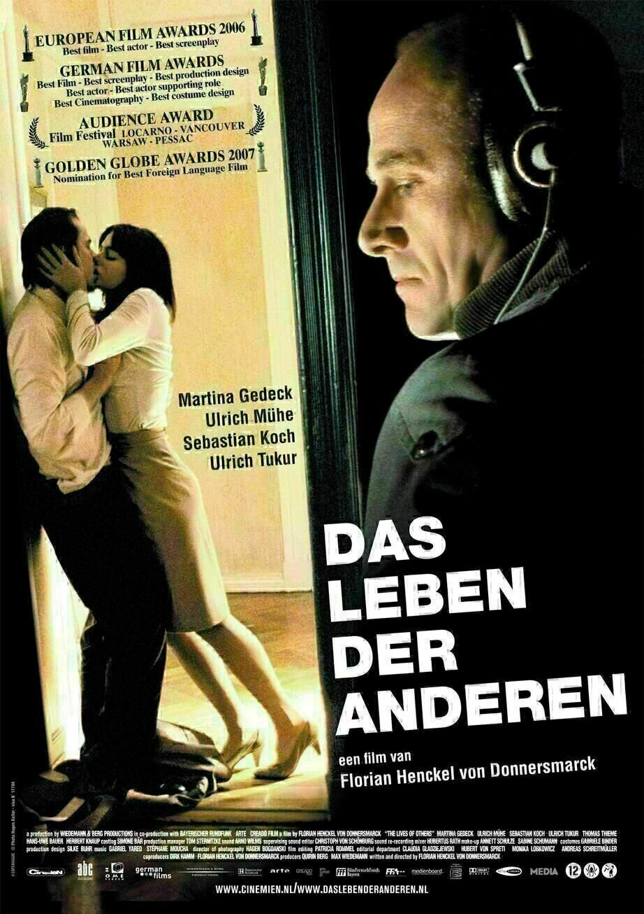

This is a weekly event open to all members of the MPI-AB in Konstanz and Radolfzell.
The next movie screening is on: Mar 22, 2023 at 18:00
The next movie is
Before this, we have also watched
- The Meg (2018)
- The Babadook (2014)
- The Birds (1963)
- Das Leben der Anderen or The Lives of Others (Spanish, 2014)
- Relatos Salvajes or Wild Tales (Spanish, 2014)
- Talaash (Hindi, 2012)
- The Queen of Tress (2005)
- Rear Window (1954)
- Prehistoric Planet (2022)